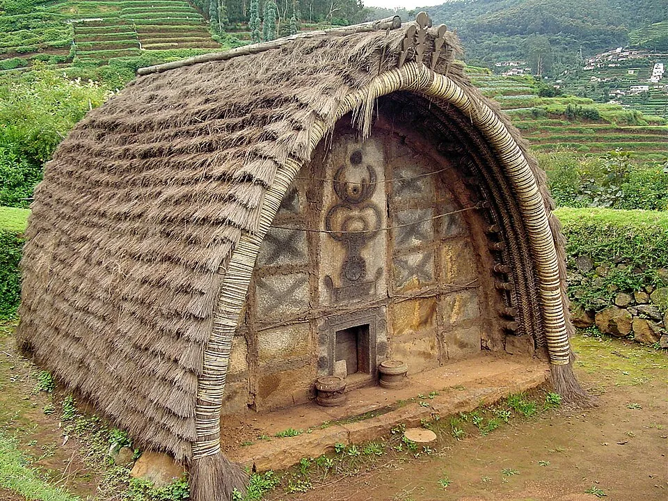

Museums and exhibitions · Anthropology · History · Heritage, museums and conservation
Museum named after the Mizo chieftainess Ropuiliani opens in Mizoram
The Ropuiliani Tribal Freedom Fighters Museum in Mizoram, funded by the Union Ministry of Tribal Affairs according to an official quoted by IANS, was inaugurated on 15 November, Janjatiya Gaurav Divas.


- Where
- Kelsih, Aizawl district, Mizoram
Prime Minister Narendra Modi inaugurated the Ropuiliani Tribal Freedom Fighters Museum in Mizoram on 15 November 2026, Janjatiya Gaurav Divas, the day marking the birth anniversary of Birsa Munda. He took part by video link in a Janjatiya Gaurav Divas programme at Gadchiroli in Maharashtra. A Press Information Bureau release of 14 November said the museum commemorates Mizo tribal freedom fighters and aims to preserve tribal culture and heritage.
The museum is named after Ropuiliani, a nineteenth-century Mizo chieftainess who resisted British rule in what were then the Lushai Hills. According to IANS, she was arrested, taken to Rangamati in the Chittagong Hill Tracts, now in Bangladesh, and died in captivity in January 1895.
The government release places the museum at Aizawl. IANS reports that it stands at Kelsih, a village in the Aibawk block of Aizawl district, and is housed at the Tribal Research Institute there. Chief Minister Lalduhoma also unveiled a statue of Ropuiliani at Kelsih, PTI reported, and said the museum would showcase Mizo history and culture.
Both agencies list a cafeteria, staff quarters, an open-air theatre and the Birsa Munda Tribal Pride Garden in the complex; IANS adds a museum building, a traditional hut and a heritage walk. IANS, citing a senior official, puts the Ministry of Tribal Affairs' funding at Rs 25.59 crore and says the ministry is setting up 11 such museums in 10 states, among them one at Tamenglong in Manipur.
Neither agency report describes the galleries or the objects on display.
Sources
- PM to participate in Janjatiya Gaurav Diwas programme on 15 November, Press Information Bureau, Government of India, 2026-11-14
- PM virtually inaugurates Ropuiliani Tribal Freedom Fighters Museum in Mizoram, PTI, via ThePrint, 2026-11-15
- PM Modi inaugurates Ropuiliani Tribal Freedom Fighters Museum in Mizoram, IANS, via The Sentinel, 2026-11-16
Written by Talaash Heritage from the sources above. Spotted an error? Write to talaashheritage@gmail.com and we will correct it on this page.
More from the Heritage desk · More in Anthropology · Background guide